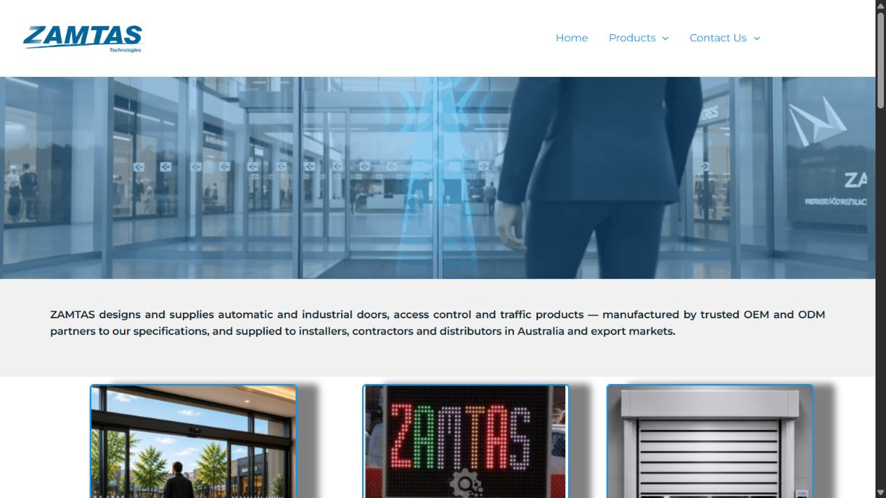
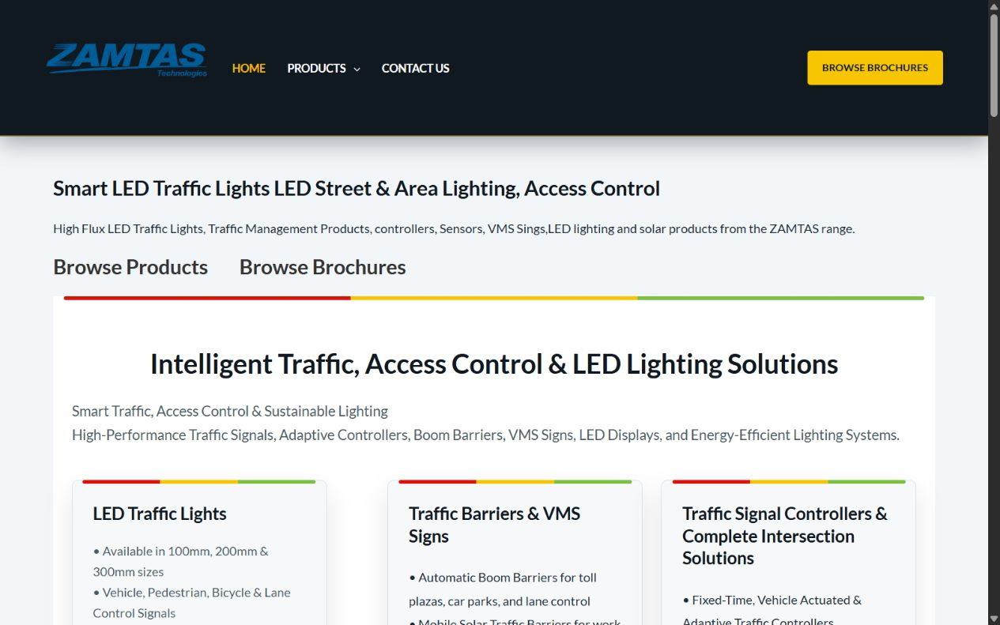
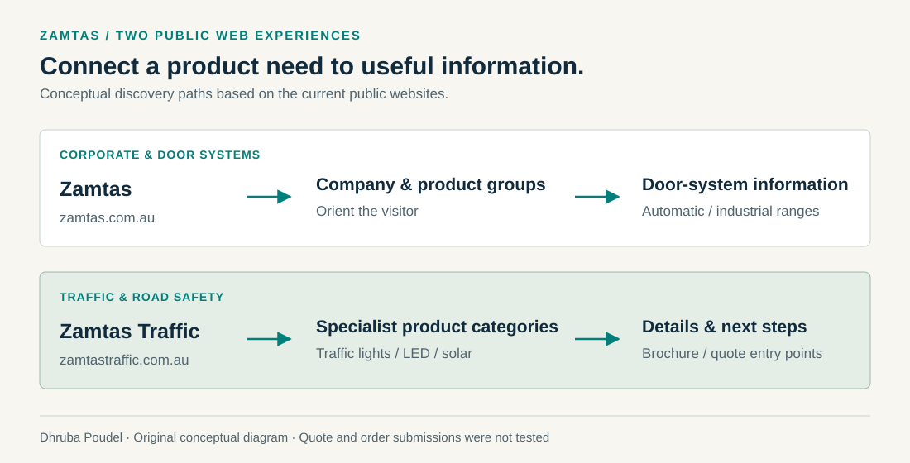

Commercial work · Website design & development
Zamtas websites
Two specialist product businesses, translated into public web experiences.
- The need
- Help visitors explore specialist products and find the relevant product or enquiry path.
- My contribution
- Designed and developed the corporate and traffic-products websites.
- Public evidence
- Both websites are available to inspect. Current public pages were reviewed on 26 October 2026.

zamtas.com.au ↗

zamtastraffic.com.au ↗
Make a specialist product range understandable.
Commercial product websites need to connect a visitor's requirement with the relevant product information. For Zamtas, that includes automatic and industrial door systems. Zamtas Traffic serves a separate range of traffic-light, road-safety, LED and solar products.
The two websites give these product areas their own public presence while keeping the relationship between the businesses visible.
Website design and development, with business context.
I designed and developed zamtas.com.au and zamtastraffic.com.au. This work adds commercial website delivery to my broader application, automation and data portfolio.
The current public builds use the WordPress ecosystem, including Astra, Elementor and WooCommerce components visible in their public assets. Those are established platform, theme and plugin foundations; the case study credits my website design and development rather than claiming authorship of those components.
Give each audience a useful route through the information.
The corporate site introduces the product groups and company context. The traffic site offers a more specialised product catalogue, with product detail, brochure and quote-request entry points visible in the public experience.

For a technical reader, the important distinction is between a working public product experience and the operational systems behind a quote or order. Those deeper transactions require their own acceptance evidence.
Separate the original contribution from the current public review.
- Design & development
- Personal contribution confirmed by Dhruba Poudel for both websites.
- Public review
- Homepages and visible product areas reviewed on 26 October 2026. The screenshots above show the public sites at that review.
- Platform observation
- Current public assets identify WordPress and theme/plugin components. This observation does not date the original implementation or establish which components have changed since delivery.
- Transactional flows
- Quote requests and actual orders were not submitted during this portfolio review. Commerce and enquiry processing retain separate acceptance checks.
- Ongoing scope
- Original delivery dates, current maintenance responsibility and measured commercial outcomes are left for confirmation.
This paired case uses public pages and describes my contribution without publishing application source, business account information or customer records.